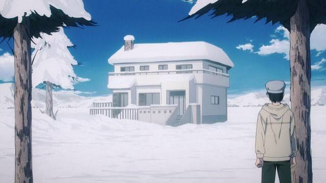
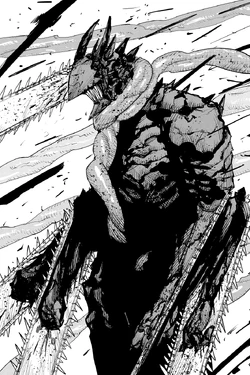
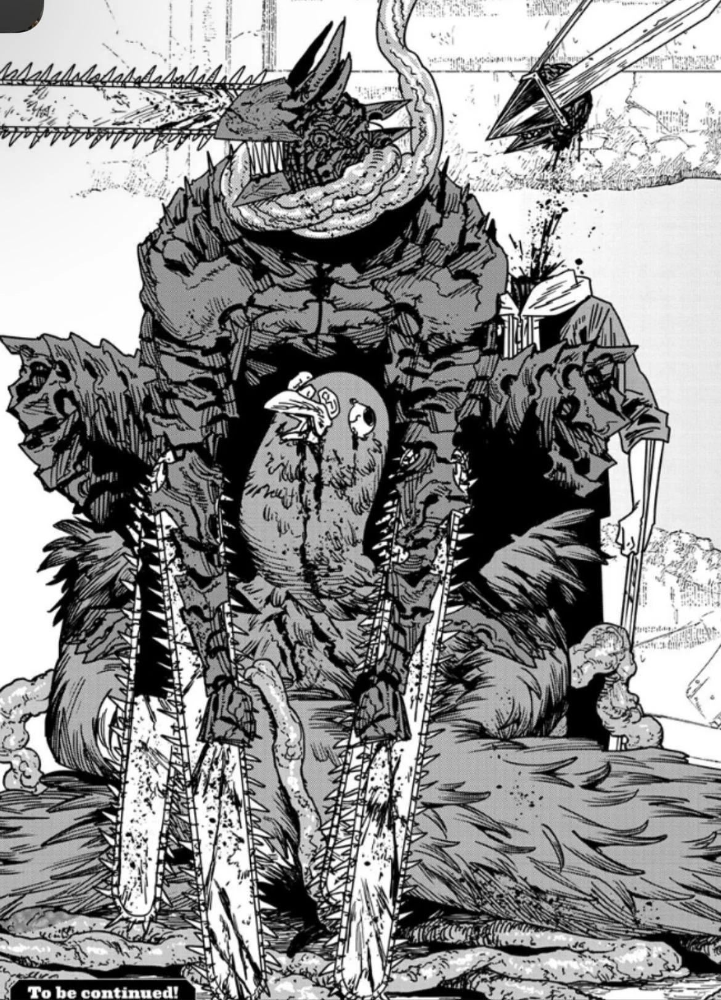
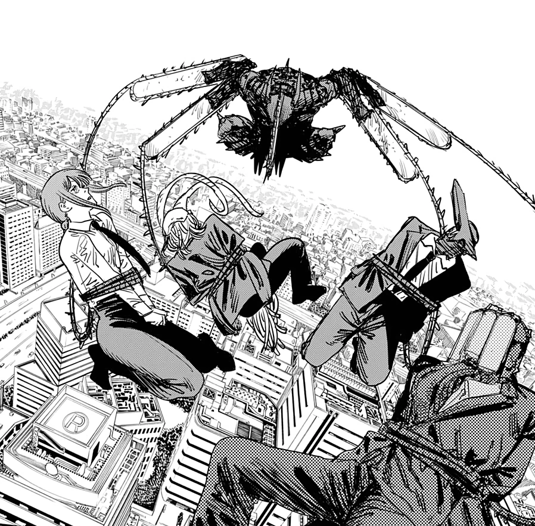
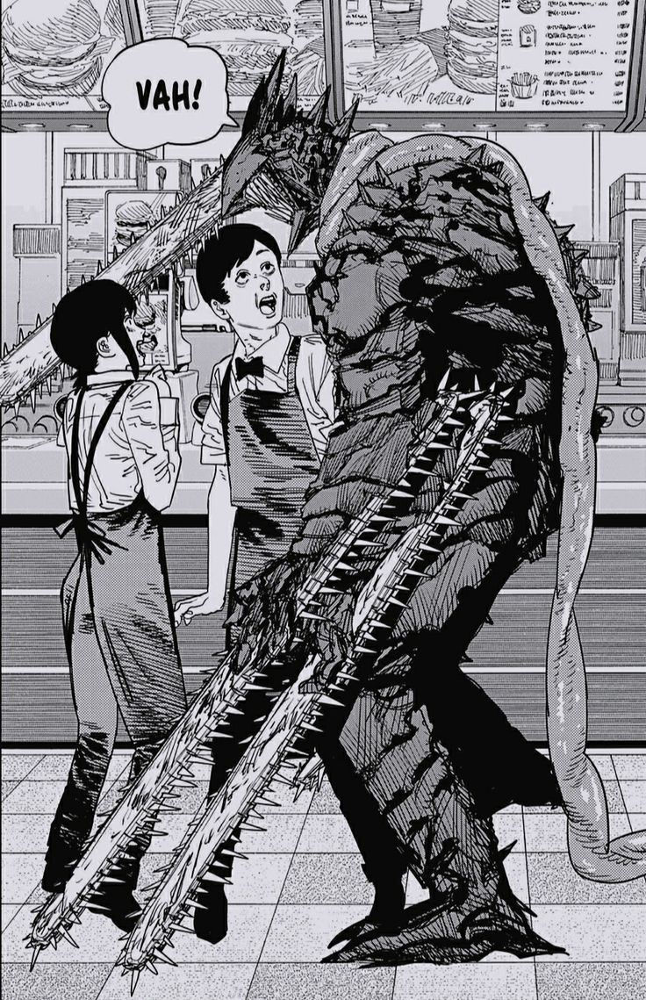

I always loved hearing you talk about your dreams. Here's the deal. I'll give you my heart...and in exchange, I want you to show me your dream. I always loved hearing you talk about your dreams. Here's the deal. I'll give you my heart...and in exchange, I want you to show me your dream. I always loved hearing you talk about your dreams. Here's the deal. I'll give you my heart...and in exchange, I want you to show me your dream. I always loved hearing you talk about your dreams. Here's the deal. I'll give you my heart...and in exchange, I want you to show me your dream. I always loved hearing you talk about your dreams. Here's the deal. I'll give you my heart...and in exchange, I want you to show me your dream. I always loved hearing you talk about your dreams. Here's the deal. I'll give you my heart...and in exchange, I want you to show me your dream. I always loved hearing you talk about your dreams. Here's the deal. I'll give you my heart...and in exchange, I want you to show me your dream. I always loved hearing you talk about your dreams. Here's the deal. I'll give you my heart...and in exchange, I want you to show me your dream. I always loved hearing you talk about your dreams. Here's the deal. I'll give you my heart...and in exchange, I want you to show me your dream. I always loved hearing you talk about your dreams. Here's the deal. I'll give you my heart...and in exchange, I want you to show me your dream. I always loved hearing you talk about your dreams. Here's the deal. I'll give you my heart...and in exchange, I want you to show me your dream. I always loved hearing you talk about your dreams. Here's the deal. I'll give you my heart...and in exchange, I want you to show me your dream. I always loved hearing you talk about your dreams. Here's the deal. I'll give you my heart...and in exchange, I want you to show me your dream. I always loved hearing you talk about your dreams. Here's the deal. I'll give you my heart...and in exchange, I want you to show me your dream. I always loved hearing you talk about your dreams. Here's the deal. I'll give you my heart...and in exchange, I want you to show me your dream. I always loved hearing you talk about your dreams. Here's the deal. I'll give you my heart...and in exchange, I want you to show me your dream. I always loved hearing you talk about your dreams. Here's the deal. I'll give you my heart...and in exchange, I want you to show me your dream. I always loved hearing you talk about your dreams. Here's the deal. I'll give you my heart...and in exchange, I want you to show me your dream. I always loved hearing you talk about your dreams. Here's the deal. I'll give you my heart...and in exchange, I want you to show me your dream. I always loved hearing you talk about your dreams. Here's the deal. I'll give you my heart...and in exchange, I want you to show me your dream. I always loved hearing you talk about your dreams. Here's the deal. I'll give you my heart...and in exchange, I want you to show me your dream. I always loved hearing you talk about your dreams. Here's the deal. I'll give you my heart...and in exchange, I want you to show me your dream. I always loved hearing you talk about your dreams. Here's the deal. I'll give you my heart...and in exchange, I want you to show me your dream. I always loved hearing you talk about your dreams. Here's the deal. I'll give you my heart...and in exchange, I want you to show me your dream. I always loved hearing you talk about your dreams. Here's the deal. I'll give you my heart...and in exchange, I want you to show me your dream. I always loved hearing you talk about your dreams. Here's the deal. I'll give you my heart...and in exchange, I want you to show me your dream. I always loved hearing you talk about your dreams. Here's the deal. I'll give you my heart...and in exchange, I want you to show me your dream. I always loved hearing you talk about your dreams. Here's the deal. I'll give you my heart...and in exchange, I want you to show me your dream. I always loved hearing you talk about your dreams. Here's the deal. I'll give you my heart...and in exchange, I want you to show me your dream. I always loved hearing you talk about your dreams. Here's the deal. I'll give you my heart...and in exchange, I want you to show me your dream. I always loved hearing you talk about your dreams. Here's the deal. I'll give you my heart...and in exchange, I want you to show me your dream. I always loved hearing you talk about your dreams. Here's the deal. I'll give you my heart...and in exchange, I want you to show me your dream. I always loved hearing you talk about your dreams. Here's the deal. I'll give you my heart...and in exchange, I want you to show me your dream. I always loved hearing you talk about your dreams. Here's the deal. I'll give you my heart...and in exchange, I want you to show me your dream. I always loved hearing you talk about your dreams. Here's the deal. I'll give you my heart...and in exchange, I want you to show me your dream. I always loved hearing you talk about your dreams. Here's the deal. I'll give you my heart...and in exchange, I want you to show me your dream. I always loved hearing you talk about your dreams. Here's the deal. I'll give you my heart...and in exchange, I want you to show me your dream. I always loved hearing you talk about your dreams. Here's the deal. I'll give you my heart...and in exchange, I want you to show me your dream. I always loved hearing you talk about your dreams. Here's the deal. I'll give you my heart...and in exchange, I want you to show me your dream. I always loved hearing you talk about your dreams. Here's the deal. I'll give you my heart...and in exchange, I want you to show me your dream. I always loved hearing you talk about your dreams. Here's the deal. I'll give you my heart...and in exchange, I want you to show me your dream. I always loved hearing you talk about your dreams. Here's the deal. I'll give you my heart...and in exchange, I want you to show me your dream. I always loved hearing you talk about your dreams. Here's the deal. I'll give you my heart...and in exchange, I want you to show me your dream. I always loved hearing you talk about your dreams. Here's the deal. I'll give you my heart...and in exchange, I want you to show me your dream. I always loved hearing you talk about your dreams. Here's the deal. I'll give you my heart...and in exchange, I want you to show me your dream. I always loved hearing you talk about your dreams. Here's the deal. I'll give you my heart...and in exchange, I want you to show me your dream. I always loved hearing you talk about your dreams. Here's the deal. I'll give you my heart...and in exchange, I want you to show me your dream. I always loved hearing you talk about your dreams. Here's the deal. I'll give you my heart...and in exchange, I want you to show me your dream. I always loved hearing you talk about your dreams. Here's the deal. I'll give you my heart...and in exchange, I want you to show me your dream. I always loved hearing you talk about your dreams. Here's the deal. I'll give you my heart...and in exchange, I want you to show me your dream. I always loved hearing you talk about your dreams. Here's the deal. I'll give you my heart...and in exchange, I want you to show me your dream. I always loved hearing you talk about your dreams. Here's the deal. I'll give you my heart...and in exchange, I want you to show me your dream. I always loved hearing you talk about your dreams. Here's the deal. I'll give you my heart...and in exchange, I want you to show me your dream. I always loved hearing you talk about your dreams. Here's the deal. I'll give you my heart...and in exchange, I want you to show me your dream. I always loved hearing you talk about your dreams. Here's the deal. I'll give you my heart...and in exchange, I want you to show me your dream. I always loved hearing you talk about your dreams. Here's the deal. I'll give you my heart...and in exchange, I want you to show me your dream. I always loved hearing you talk about your dreams. Here's the deal. I'll give you my heart...and in exchange, I want you to show me your dream. I always loved hearing you talk about your dreams. Here's the deal. I'll give you my heart...and in exchange, I want you to show me your dream. I always loved hearing you talk about your dreams. Here's the deal. I'll give you my heart...and in exchange, I want you to show me your dream. I always loved hearing you talk about your dreams. Here's the deal. I'll give you my heart...and in exchange, I want you to show me your dream. I always loved hearing you talk about your dreams. Here's the deal. I'll give you my heart...and in exchange, I want you to show me your dream. I always loved hearing you talk about your dreams. Here's the deal. I'll give you my heart...and in exchange, I want you to show me your dream. I always loved hearing you talk about your dreams. Here's the deal. I'll give you my heart...and in exchange, I want you to show me your dream. I always loved hearing you talk about your dreams. Here's the deal. I'll give you my heart...and in exchange, I want you to show me your dream. I always loved hearing you talk about your dreams. Here's the deal. I'll give you my heart...and in exchange, I want you to show me your dream. I always loved hearing you talk about your dreams. Here's the deal. I'll give you my heart...and in exchange, I want you to show me your dream. I always loved hearing you talk about your dreams. Here's the deal. I'll give you my heart...and in exchange, I want you to show me your dream. I always loved hearing you talk about your dreams. Here's the deal. I'll give you my heart...and in exchange, I want you to show me your dream. I always loved hearing you talk about your dreams. Here's the deal. I'll give you my heart...and in exchange, I want you to show me your dream. I always loved hearing you talk about your dreams. Here's the deal. I'll give you my heart...and in exchange, I want you to show me your dream. I always loved hearing you talk about your dreams. Here's the deal. I'll give you my heart...and in exchange, I want you to show me your dream. I always loved hearing you talk about your dreams. Here's the deal. I'll give you my heart...and in exchange, I want you to show me your dream. I always loved hearing you talk about your dreams. Here's the deal. I'll give you my heart...and in exchange, I want you to show me your dream. I always loved hearing you talk about your dreams. Here's the deal. I'll give you my heart...and in exchange, I want you to show me your dream. I always loved hearing you talk about your dreams. Here's the deal. I'll give you my heart...and in exchange, I want you to show me your dream. I always loved hearing you talk about your dreams. Here's the deal. I'll give you my heart...and in exchange, I want you to show me your dream. I always loved hearing you talk about your dreams. Here's the deal. I'll give you my heart...and in exchange, I want you to show me your dream. I always loved hearing you talk about your dreams. Here's the deal. I'll give you my heart...and in exchange, I want you to show me your dream. I always loved hearing you talk about your dreams. Here's the deal. I'll give you my heart...and in exchange, I want you to show me your dream. I always loved hearing you talk about your dreams. Here's the deal. I'll give you my heart...and in exchange, I want you to show me your dream. I always loved hearing you talk about your dreams. Here's the deal. I'll give you my heart...and in exchange, I want you to show me your dream. I always loved hearing you talk about your dreams. Here's the deal. I'll give you my heart...and in exchange, I want you to show me your dream. I always loved hearing you talk about your dreams. Here's the deal. I'll give you my heart...and in exchange, I want you to show me your dream. I always loved hearing you talk about your dreams. Here's the deal. I'll give you my heart...and in exchange, I want you to show me your dream. I always loved hearing you talk about your dreams. Here's the deal. I'll give you my heart...and in exchange, I want you to show me your dream. I always loved hearing you talk about your dreams. Here's the deal. I'll give you my heart...and in exchange, I want you to show me your dream. I always loved hearing you talk about your dreams. Here's the deal. I'll give you my heart...and in exchange, I want you to show me your dream. I always loved hearing you talk about your dreams. Here's the deal. I'll give you my heart...and in exchange, I want you to show me your dream. I always loved hearing you talk about your dreams. Here's the deal. I'll give you my heart...and in exchange, I want you to show me your dream. I always loved hearing you talk about your dreams. Here's the deal. I'll give you my heart...and in exchange, I want you to show me your dream. I always loved hearing you talk about your dreams. Here's the deal. I'll give you my heart...and in exchange, I want you to show me your dream. I always loved hearing you talk about your dreams. Here's the deal. I'll give you my heart...and in exchange, I want you to show me your dream. I always loved hearing you talk about your dreams. Here's the deal. I'll give you my heart...and in exchange, I want you to show me your dream. I always loved hearing you talk about your dreams. Here's the deal. I'll give you my heart...and in exchange, I want you to show me your dream. I always loved hearing you talk about your dreams. Here's the deal. I'll give you my heart...and in exchange, I want you to show me your dream. I always loved hearing you talk about your dreams. Here's the deal. I'll give you my heart...and in exchange, I want you to show me your dream. I always loved hearing you talk about your dreams. Here's the deal. I'll give you my heart...and in exchange, I want you to show me your dream. I always loved hearing you talk about your dreams. Here's the deal. I'll give you my heart...and in exchange, I want you to show me your dream. I always loved hearing you talk about your dreams. Here's the deal. I'll give you my heart...and in exchange, I want you to show me your dream. I always loved hearing you talk about your dreams. Here's the deal. I'll give you my heart...and in exchange, I want you to show me your dream. I always loved hearing you talk about your dreams. Here's the deal. I'll give you my heart...and in exchange, I want you to show me your dream. I always loved hearing you talk about your dreams. Here's the deal. I'll give you my heart...and in exchange, I want you to show me your dream. I always loved hearing you talk about your dreams. Here's the deal. I'll give you my heart...and in exchange, I want you to show me your dream. I always loved hearing you talk about your dreams. Here's the deal. I'll give you my heart...and in exchange, I want you to show me your dream. I always loved hearing you talk about your dreams. Here's the deal. I'll give you my heart...and in exchange, I want you to show me your dream. I always loved hearing you talk about your dreams. Here's the deal. I'll give you my heart...and in exchange, I want you to show me your dream. I always loved hearing you talk about your dreams. Here's the deal. I'll give you my heart...and in exchange, I want you to show me your dream. I always loved hearing you talk about your dreams. Here's the deal. I'll give you my heart...and in exchange, I want you to show me your dream. I always loved hearing you talk about your dreams. Here's the deal. I'll give you my heart...and in exchange, I want you to show me your dream. I always loved hearing you talk about your dreams. Here's the deal. I'll give you my heart...and in exchange, I want you to show me your dream. I always loved hearing you talk about your dreams. Here's the deal. I'll give you my heart...and in exchange, I want you to show me your dream. I always loved hearing you talk about your dreams. Here's the deal. I'll give you my heart...and in exchange, I want you to show me your dream. I always loved hearing you talk about your dreams. Here's the deal. I'll give you my heart...and in exchange, I want you to show me your dream. I always loved hearing you talk about your dreams. Here's the deal. I'll give you my heart...and in exchange, I want you to show me your dream. I always loved hearing you talk about your dreams. Here's the deal. I'll give you my heart...and in exchange, I want you to show me your dream. I always loved hearing you talk about your dreams. Here's the deal. I'll give you my heart...and in exchange, I want you to show me your dream. I always loved hearing you talk about your dreams. Here's the deal. I'll give you my heart...and in exchange, I want you to show me your dream. I always loved hearing you talk about your dreams. Here's the deal. I'll give you my heart...and in exchange, I want you to show me your dream. I always loved hearing you talk about your dreams. Here's the deal. I'll give you my heart...and in exchange, I want you to show me your dream. I always loved hearing you talk about your dreams. Here's the deal. I'll give you my heart...and in exchange, I want you to show me your dream. I always loved hearing you talk about your dreams. Here's the deal. I'll give you my heart...and in exchange, I want you to show me your dream. I always loved hearing you talk about your dreams. Here's the deal. I'll give you my heart...and in exchange, I want you to show me your dream. I always loved hearing you talk about your dreams. Here's the deal. I'll give you my heart...and in exchange, I want you to show me your dream. I always loved hearing you talk about your dreams. Here's the deal. I'll give you my heart...and in exchange, I want you to show me your dream. I always loved hearing you talk about your dreams. Here's the deal. I'll give you my heart...and in exchange, I want you to show me your dream. I always loved hearing you talk about your dreams. Here's the deal. I'll give you my heart...and in exchange, I want you to show me your dream. I always loved hearing you talk about your dreams. Here's the deal. I'll give you my heart...and in exchange, I want you to show me your dream. I always loved hearing you talk about your dreams. Here's the deal. I'll give you my heart...and in exchange, I want you to show me your dream. I always loved hearing you talk about your dreams. Here's the deal. I'll give you my heart...and in exchange, I want you to show me your dream. I always loved hearing you talk about your dreams. Here's the deal. I'll give you my heart...and in exchange, I want you to show me your dream. I always loved hearing you talk about your dreams. Here's the deal. I'll give you my heart...and in exchange, I want you to show me your dream. I always loved hearing you talk about your dreams. Here's the deal. I'll give you my heart...and in exchange, I want you to show me your dream.
keep on dreaming, denji